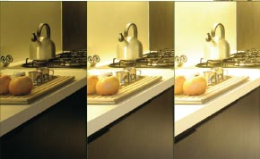
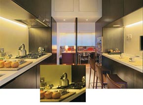
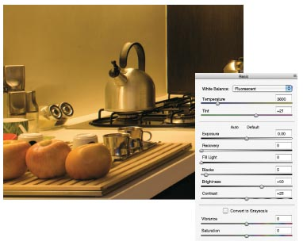
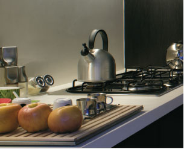
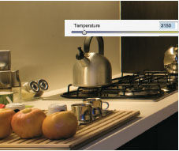
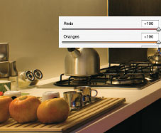
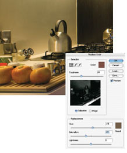
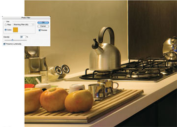

室內光源下的白平衡技巧
一般家庭廚房的流理台上方常會裝設螢光燈, 由於螢光燈光譜分佈不均, 黃綠色區域會出現尖峰, 因此很難取得完美的色彩平衡, 修正時也往往會使畫面喪失飽和度。
從這 3 張不同曝光值的照片看得出來, 問題不僅在於整體色彩, 也在於亮度改變時產生的色差 － 流理台應該是白色的, 而水壺和金屬光澤則應該是灰色的。
由於畫面中還有其它光源 (日光和鎢絲燈光), 因此最後妥協的結果將使室內的廚房偏綠 － 局部放大影像是以 Photoshop 開啟 RAW 檔的顯示畫面。
使用預設的螢光燈 (Fluorescent) 白平衡, 只能得到些許改善。
以白平衡滴管 (Balance Dropper) 點選牆面, 可得到中性色彩, 但卻失去飽和度, 整體畫面也偏冷色調。
接著我們降低色溫值 (Temperature), 使畫面恢復暖色調, 色彩也較自然, 但整體感覺飽和度仍嫌不足。
由於畫面中大部分的色彩屬於紅色, 所以解決方案之一, 是直接增加紅色 (Reds) 與橘黃色 (Oranges) 的飽和度 (Saturation) － 像這張照片在調整後已有明顯改善, 但卻使流理台前緣看起來也偏紅。
畫面偏紅的部份, 可用 Photoshop 的取代顏色(Replace Color) 功能來加以改善, 不過結果還是不甚理想 (稍微偏暖)。
最後利用相片濾鏡 (Photo Filter) 中的橘色濾鏡, 讓照片中的這部分影像更 "暖" 些, 同時也突顯出蘋果的顏色。